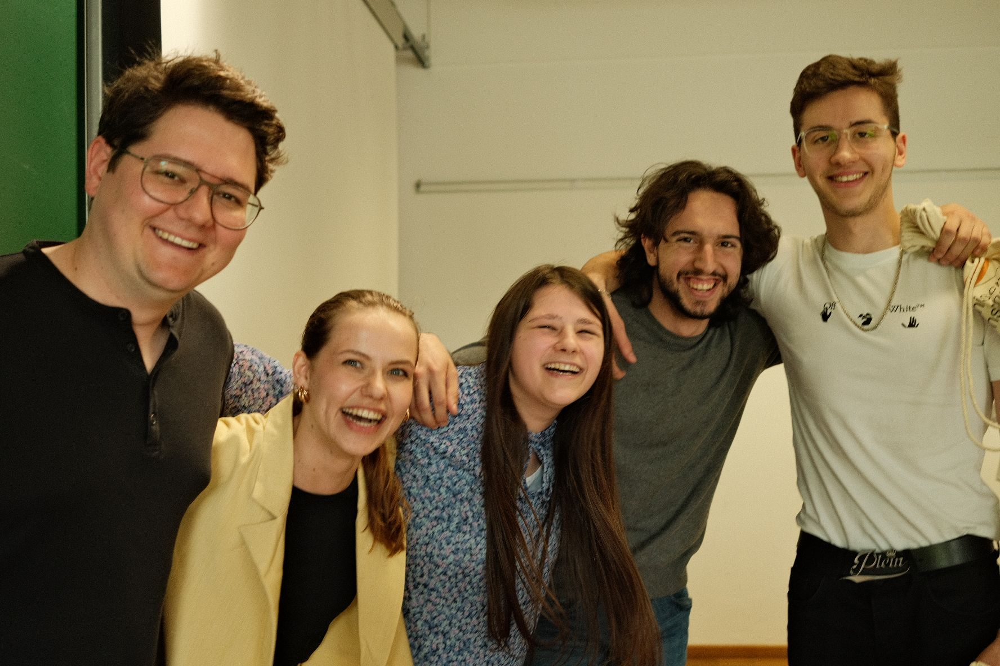
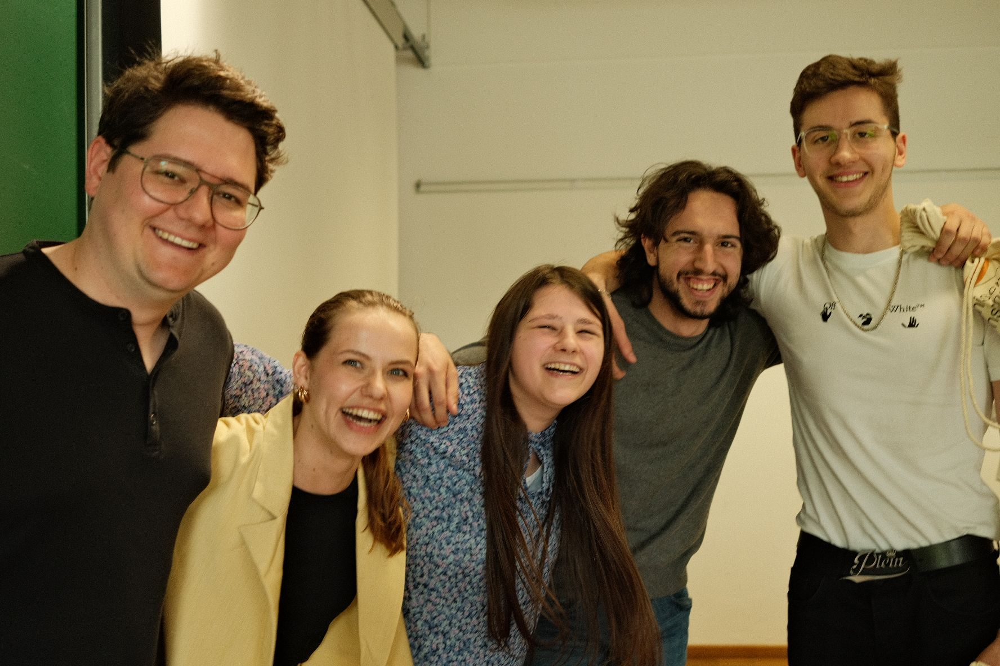

Projecten
Schoolprojecten
Fotografie
Tijdens mijn banaba communicatie kreeg ik het vak fotografie, dit was mijn lievelingsvak. Hier zijn enkele foto’s, die ik tijdens de opleiding heb gemaakt en trots op ben. De thema's van de foto's zijn:
- Beeldtaal
- Belichting
- Compositie
- Kleurfotografie
- Modefotografie
- Portretfotografie
Project Rosenheim 2023
 

In 2023 mocht ik samen met enkele meisjes uit mijn klasgroep (foto 1) deelnemen aan een uitwisselingsproject, nadat wij het beste groepswerk van de klas hadden gemaakt. We hadden een app ontworpen waarin je je eigen kleren kon toevoegen.
Tijdens dit project werden we opgedeeld in groepen met studenten uit Duitsland, Kroatië en België, wat volledig buiten mijn comfortzone lag. Toch ben ik enorm blij dat ik deze ervaring heb opgedaan, omdat ik mijn Engels heb kunnen verbeteren, nieuwe culturen heb leren kennen en mijn samenwerkingsvaardigheden heb versterkt.
Tijdens het project ontwierpen mijn groepje en ik (foto 2) een app op basis van de customer journey en het value proposition canvas. Ons team koos ervoor om een spel te ontwikkelen waarin je met een NPC-avatar kon praten die mensen met mentale problemen begeleidde en hen, indien nodig, doorverwees naar een echte psycholoog. Ik vond dit een superleuk en leerrijk project.
Bachelorproef
Voor mijn bachelorproef verdiepte ik me in hoe de gemeente Kortenaken nieuwe inwoners beter kan verwelkomen. Tijdens dit onderzoek liep ik stage in het gemeentehuis, waar ik nauw samenwerkte met de medewerkers en veel ondersteuning kreeg. Bovendien sprak ik met verschillende andere gemeenten om inspiratie op te doen en hun aanpak rond het onthaal van nieuwe inwoners te vergelijken.
Privé-projecten
Stiekem ben ik een dichter...
Om negatieve gevoelens te verwerken schrijf ik in mijn vrije tijd af en toe gedichten. Hoewel dit niet direct met digitale vormgeving te maken heeft, laat het zien dat ik graag creatief bezig ben en me volledig kan verliezen in creatief schrijven.
Hier is één van mijn gedichten:
Geluk
Geluk is iets klein
Het is vaak ver te zoeken,
Maar het zal altijd aanwezig zijn.
Meestal zoeken mensen er niet naar
En denken ze alleen aan de haat
Of aan alles wat fout gaat.
Geluk kan er pas zijn als je jezelf durft te tonen aan anderen.
En niet voor hun gaat veranderen.
Geluk heb je vaak zelf in de hand,
Laat het niet verbitteren door verdriet.
Geniet van alle mooie momenten
Die het leven je schenkt.
Want niets is voor eeuwig.
Ik weet dat het leven soms hard is,
Maar net datgene maakt het zo speciaal
En zorgt ervoor dat de mooie momenten,
Nooit uit je hartje zullen gaan.
Uitnodiging verjaardagsfeest Nick
Toen mijn broer 30 jaar werd, organiseerden mijn mama, de vriendin van mijn broer en ik een verrassingsfeest voor hem. Hiervoor kwamen we regelmatig samen om de taken te verdelen. Eén van mijn verantwoordelijkheden was het ontwerpen van de uitnodiging. Die maakte ik in InDesign, nog vóór ik aan de opleiding Digitale Vormgeving begon. Hoewel het resultaat nog niet perfect was, werkte dit net motiverend en bevestigde het mijn keuze om digitale vormgeving te studeren, zodat ik dit soort ontwerpen in de toekomst nog sterker kan uitwerken.